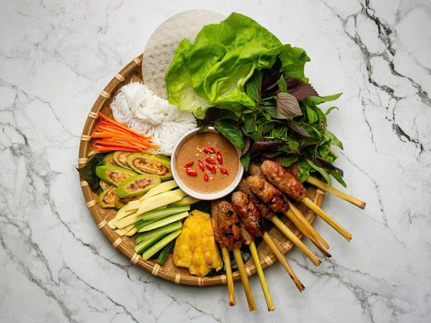

🌯Nem lụi Huế
💁🏻♀️ Giới thiệu
Nem lụi là “vua” của các món ăn vặt Huế, nổi bật với sự kết hợp giữa thịt nướng thơm lừng và rau sống thanh mát.
🥣 Nguyên liệu chính
• Thịt heo xay, bì heo, mỡ gáy
• Cây sả làm que xiên
• Nước lèo từ gan heo, đậu phộng, mè
• Rau sống: vả, khế, chuối chát, xà lách
🧑🍳 Cách chế biến
• Nướng nem trên than hồng đến khi vàng thơm
• Nấu nước lèo sánh mịn, béo ngậy
💭 Mách nhỏ cho bạn
👉🏻 Ăn kèm bánh tráng, rau sống để tạo vị hài hòa